(23) MNIST — ZeroInit — 0#
Motivation: Init as all zeros. Device = cuda:0
Show code cell source
# HIDE CODE
import os, sys
from IPython.display import display
# tmp & extras dir
git_dir = os.path.join(os.environ['HOME'], 'Dropbox/git')
extras_dir = os.path.join(git_dir, 'jb-vae/_extras')
fig_base_dir = os.path.join(git_dir, 'jb-vae/figs')
tmp_dir = os.path.join(git_dir, 'jb-vae/tmp')
# GitHub
sys.path.insert(0, os.path.join(git_dir, '_PoissonVAE'))
from figures.fighelper import *
# warnings, tqdm, & style
warnings.filterwarnings('ignore', category=DeprecationWarning)
from rich.jupyter import print
%matplotlib inline
set_style()
Import \(/\) prep#
from _tmp.gapvae import prepare_stuff, iteration, validate
from _tmp.plotters import plot_latent_space, plot_latent_scatter
n_latents = 20
weight_norm = True
batch_size = 300
epochs = 1200
pvae, optim, optim_schedule, trn, vld, device, kws_iter = prepare_stuff(
device_idx=0,
n_latents=n_latents,
max_grad_norm=500,
batch_size=batch_size,
epochs=epochs,
lr=1e-3,
beta=1.0,
)
+-------------+------------+ | Module Name | Num Params | +-------------+------------+ | PoissonVAE | 7.8 Mil | | --- | --- | | enc | 6.6 Mil | | fc_enc | 660 | | dec | 1.2 Mil | | fc_dec | 21.5 K | +-------------+------------+
fig, axes = create_figure(1, 4, (9.5, 1.7), width_ratios=[1, 1, 1.5, 1.5], layout='constrained')
sns.histplot(to_np(pvae.log_rates).ravel(), ax=axes[0])
sns.histplot(to_np(pvae.log_rates.exp()).ravel(), ax=axes[1])
axes[2].plot(kws_iter['temperatures'])
axes[3].plot(kws_iter['beta_values'])
_t = kws_iter['temperatures'].min()
axes[2].axhline(_t, color='r', ls='--', label=f't_min = {_t:0.3f}')
axes[2].legend()
plt.show()

Train / Validate#
trn#
%%time
pbar = tqdm(range(epochs), ncols=130, position=0)
nelbo, grads = np.zeros(epochs), np.zeros(epochs)
for ep in pbar:
grad, tot, recon, kl, r_max = iteration(
ep, pvae, trn, optim, optim_schedule, device, **kws_iter)
nelbo[ep], grads[ep] = recon + 1.0 * kl, grad
msg = ', '.join([
f"grad = {grad:0.1f}",
f"r_max = {r_max:0.1f}",
f"loss = (kl: {kl:0.1f}, recon: {recon:0.1f} —— tot: {tot:0.2f}) ",
])
pbar.set_description(msg)
grad = 116.7, r_max = 4.5, loss = (kl: 9.0, recon: 23.7 —— tot: 32.76) : 100%|█████████| 1200/1200 [3:06:29<00:00, 9.32s/it]
CPU times: user 5h 9min 51s, sys: 2min 19s, total: 5h 12min 10s
Wall time: 3h 6min 29s
vld#
loss_vld = validate(pvae, vld, device)
loss_vld
{'kl': 8.747770720837162,
'recon': 24.189537209903488,
'tot': 32.93730808632046}
fig, axes = create_figure(1, 3, (11, 2.4), layout='tight')
axes[0].plot(nelbo, color='k', label='nelbo loss (train, avg)')
axes[0].axhline(loss_vld['tot'], color='tomato', ls='--', label=f"validation loss: {loss_vld['tot']:0.2f}")
axes[0].legend()
for ax in axes[1:].flat:
ax.plot(grads, label='grads (avg)')
ax.axhline(kws_iter['max_grad_norm'], color='k', ls='--', label=f"grad clip: {kws_iter['max_grad_norm']}")
ax.legend()
for i in range(2):
axes[i].set_yscale('log')
# axes[0].set_ylim(top=50)
plt.show()
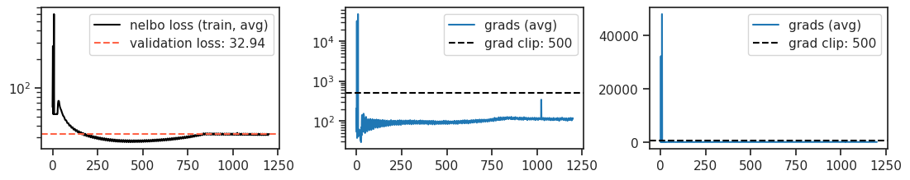
pvae.temp
0.1
pvae.temp = 0.0
spks, r_q, r_qp = [], [], []
for x, _ in iter(vld):
x = x.to(device)
with torch.inference_mode():
out = pvae(x)
spks.append(to_np(out['spks']))
r_q.append(to_np(out['log_dr'].exp()))
# r_p.append(to_np(out['log_r'].exp()))
r_qp.append(to_np(torch.exp(out['log_r'] + out['log_dr'])))
spks, r_q, r_qp = cat_map([spks, r_q, r_qp])
np.quantile(spks.ravel(), 1.0)
11.0
fig, axes = create_figure(1, 2, (11, 2.2), layout='constrained')
nbins = 5
sns.histplot(spks.ravel(), color='k', stat='percent', bins=np.linspace(0, nbins, nbins+1) - 0.5, ax=axes[0])
nbins = 20
sns.histplot(spks.ravel(), color='k', stat='percent', bins=np.linspace(0, nbins, nbins+1) - 0.5, ax=axes[1])
axes[1].set_xscale('log')
axes[1].set_yscale('log')
axes[0].grid()
plt.show()
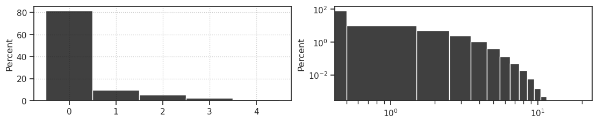
fig, axes = create_figure(2, 2, (8, 4.5), layout='constrained')
nbins = 10
_kws = dict(
legend=False,
stat='percent',
bins=np.linspace(0, nbins, nbins+1) - 0.5,
color='k',
)
sns.histplot(spks.ravel(), ax=axes[0, 0], **_kws)
# axes[0, 0].locator_params(axis='x', nbins=nbins+2)
_kws = dict(
kde=True,
legend=False,
stat='percent',
line_kws={'lw': 2},
alpha=0.2,
)
sns.histplot(r_q.ravel(), ax=axes[1, 0], **_kws)
sns.histplot(np.log(r_qp.ravel()), ax=axes[0, 1], **_kws)
_kws.update(dict(kde=False, alpha=1.0, color='g', bins=np.linspace(0, 4, 41) - 0.05))
sns.histplot(to_np(pvae.log_rates.exp()).ravel(), ax=axes[1, 1], **_kws)
axes[0, 0].set_title('Spike counts')
axes[0, 1].set_title(r'$r \delta r$' + ' (posterior)')
axes[1, 0].set_title(r'$\delta r$' + ' (encoder output)')
axes[1, 1].set_title(r'$r$' + ' (from prior)')
# axes[1, 0].set_ylim(top=350)
for ax in axes[:, 1]:
ax.set_ylabel('')
add_grid(axes)
plt.show()
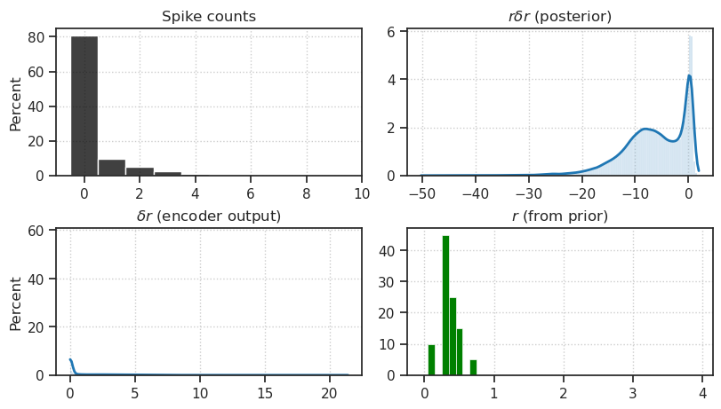
from torchvision.utils import make_grid
t = 0.0
x_samples = pvae.sample(50, t)
grid_images = make_grid(x_samples, nrow=10, normalize=True, value_range=(0, 1))
grid_images.shape
torch.Size([3, 152, 302])
x2p = to_np(grid_images)
x2p = np.transpose(x2p, (1, 2, 0))
fig, ax = create_figure(1, 1, (10, 3))
ax.imshow(x2p)
remove_ticks(ax)
plt.show()
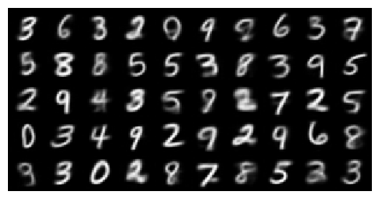
plt.imshow(to_np(x_samples[4].squeeze()));
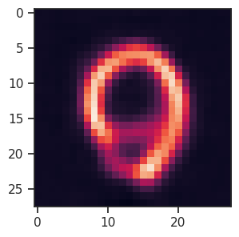
x, _ = next(iter(vld))
x = x.to(device)
with torch.inference_mode():
out = pvae(x)
num = 32
grid_images = make_grid(
torch.cat([x[:num], out['x_recon'][:num]]),
nrow=num,
normalize=True,
value_range=(0, 1),
)
x2p = to_np(grid_images)
x2p = np.transpose(x2p, (1, 2, 0))
fig, ax = create_figure(1, 1, (13, 5))
ax.imshow(x2p)
remove_ticks(ax)
plt.show()
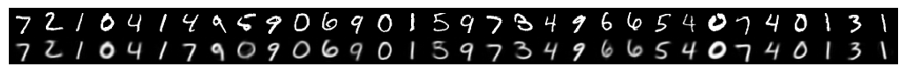
plt.imshow(to_np(out['x_recon'].squeeze()[7]));
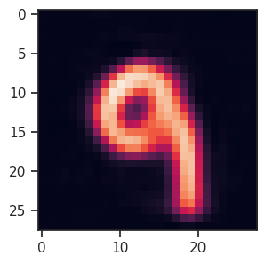
spks.shape
(10000, 20)
intvl = range(100, 1000)
fig, ax = create_figure(1, 1, (10, 2))
ax.plot(spks[intvl, 8])
plt.show()
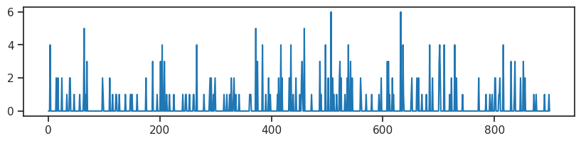
pvae.temp = 0.0
spks, r_q, r_qp = [], [], []
for x, _ in iter(vld):
x = x.to(device)
with torch.inference_mode():
out = pvae(x)
spks.append(to_np(out['spks']))
r_q.append(to_np(out['log_dr'].exp()))
# r_p.append(to_np(out['log_r'].exp()))
r_qp.append(to_np(torch.exp(out['log_r'] + out['log_dr'])))
spks, r_q, r_qp = cat_map([spks, r_q, r_qp])
spks = spks.astype(int)
fig, axes = create_figure(1, 2, (8, 2.8), layout='constrained')
x2p = to_np(r_q).ravel()
for i, ax in enumerate(axes.flat):
# dr
sns.histplot(x2p if i == 0 else np.log(x2p), stat='percent', ax=ax)
# log dr
lbl = r"$\delta r \approx 1$" if i == 0 else r"$\log \delta r \approx 0$"
lbl = 'no ff mod: ' + lbl
ax.axvline(1.0 if i == 0 else 0.0, color='r', ls='--', lw=1.2, label=lbl)
xlbl = r"$\delta r$" if i == 0 else r"$\log \delta r$"
ax.set_xlabel(xlbl)
ax.set_yscale('log')
ax.legend()
plt.show()
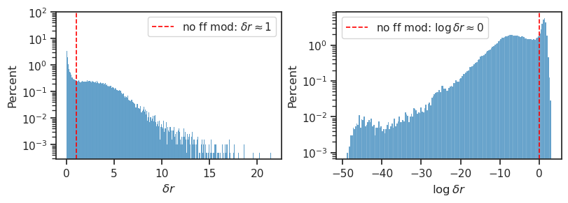
MEI#
def compute_mei(model, idx, start, excite=True, alpha=0.1, nsteps=100, scalefunc=lambda x: 1, eps=1e-3, name=''):
"""
Find an MEI for a given model and neuron ids.
-model: a pytorch model
-cids: a list of neuron ids
-start: the initial input
-alpha: the learning rate
-nsteps: the number of steps to run
-scalefunc: scales the learning rate as a func of step
-eps: the convergence threshold
-name: name for printing
"""
x = start.clone()
assert len(x) == 1
pbar = tqdm(range(nsteps), leave=False, ncols=90)
for i in pbar:
model.zero_grad()
x_copy = x.clone()
# Get the current prediction
log_dr = model.fc_enc(model.enc(x))
log_dr = log_dr[0, idx]
if excite:
y = log_dr
else:
y = log_dr.mul(-1)
# Get the gradient of output with respect to input
g = torch.autograd.grad(y, x, retain_graph=True)[0]
g_norm = torch.norm(g)
if g is None or g_norm == 0:
print("No gradient at step", i)
return None
# Update tqdm description
msg = f"idx = {idx} ——— ||g|| = {g_norm:0.5f}"
pbar.set_description(msg)
# Update the input
x = x_copy + scalefunc(i) * alpha * g
# Terminate if converged
if torch.abs(x - x_copy).max() < eps:
print(name, "converged at step", i)
break
x = (x - x.mean()) / x.std()
return x
rng = get_rng()
start = rng.normal(size=(1, 1, 28, 28))
start = torch.nn.Parameter(
data=torch.tensor(start).float(),
requires_grad=True,
)
start = start.to(device)
plt.imshow(to_np(start.squeeze()), cmap='Greys_r')
plt.colorbar();

latent_i = 8
%%time
mei = compute_mei(
model=pvae,
idx=latent_i,
start=start,
excite=True,
nsteps=10000,
alpha=0.1,
)
idx = 8 ——— ||g|| = 0.06641: 47%|▍| 4735/10000 [01:05<01:
converged at step 4738
CPU times: user 1min 6s, sys: 639 ms, total: 1min 6s
Wall time: 1min 5s
plt.imshow(to_np(mei.squeeze()), cmap='Greys_r')
plt.colorbar();
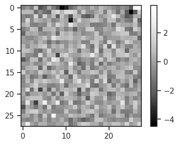
%%time
mii = compute_mei(
model=pvae,
idx=latent_i,
start=start,
excite=False,
nsteps=10000,
alpha=0.1,
)
idx = 8 ——— ||g|| = 0.07152: 55%|▌| 5543/10000 [01:14<01:
converged at step 5544
CPU times: user 1min 15s, sys: 595 ms, total: 1min 15s
Wall time: 1min 14s
plt.imshow(to_np(mii.squeeze()), cmap='Greys_r')
plt.colorbar();
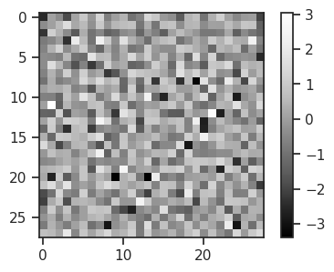
%%time
mei_all = []
mii_all = []
kws = dict(
model=pvae,
idx=None,
start=start,
nsteps=20000,
alpha=0.1,
)
for idx in range(n_latents):
kws['idx'] = idx
mei = compute_mei(excite=True, **kws)
mii = compute_mei(excite=False, **kws)
mei_all.append(mei)
mii_all.append(mii)
fig, axes = create_figure(1, 2, (3.7, 2.1), 'all', 'all', layout='constrained')
axes[0].imshow(to_np(mei.squeeze()), cmap='Greys_r')
axes[1].imshow(to_np(mii.squeeze()), cmap='Greys_r')
axes[0].set_title(f'latent #{idx} (MEI)')
axes[1].set_title(f'latent #{idx} (MII)')
remove_ticks(axes)
plt.show()
idx = 0 ——— ||g|| = 0.06222: 7%| | 1301/20000 [00:18<04:
converged at step 1309
idx = 1 ——— ||g|| = 0.08035: 25%|▎| 5008/20000 [01:10<03:
converged at step 5009
idx = 1 ——— ||g|| = 0.07611: 21%|▏| 4265/20000 [00:58<03:
converged at step 4266
idx = 2 ——— ||g|| = 0.07568: 21%|▏| 4281/20000 [00:58<03:
converged at step 4283
idx = 2 ——— ||g|| = 0.06277: 33%|▎| 6648/20000 [01:30<03:
converged at step 6652
idx = 3 ——— ||g|| = 0.54290: 56%|▌| 11276/20000 [02:34<02IOPub message rate exceeded.
The Jupyter server will temporarily stop sending output
to the client in order to avoid crashing it.
To change this limit, set the config variable
`--ServerApp.iopub_msg_rate_limit`.
Current values:
ServerApp.iopub_msg_rate_limit=1000.0 (msgs/sec)
ServerApp.rate_limit_window=3.0 (secs)
idx = 3 ——— ||g|| = 1.20667: 26%|▎| 5264/20000 [01:11<03:IOPub message rate exceeded.
The Jupyter server will temporarily stop sending output
to the client in order to avoid crashing it.
To change this limit, set the config variable
`--ServerApp.iopub_msg_rate_limit`.
Current values:
ServerApp.iopub_msg_rate_limit=1000.0 (msgs/sec)
ServerApp.rate_limit_window=3.0 (secs)
idx = 4 ——— ||g|| = 0.07118: 14%|▏| 2821/20000 [00:38<04:
converged at step 2824
idx = 4 ——— ||g|| = 0.07033: 25%|▏| 4992/20000 [01:05<03:
converged at step 4995
idx = 5 ——— ||g|| = 0.06190: 6%| | 1163/20000 [00:15<04:
converged at step 1165
idx = 5 ——— ||g|| = 0.05744: 33%|▎| 6650/20000 [01:29<02:
converged at step 6653
idx = 7 ——— ||g|| = 0.07820: 8%| | 1676/20000 [00:22<04:
converged at step 1678
idx = 7 ——— ||g|| = 0.06346: 40%|▍| 8004/20000 [01:49<02:
converged at step 8006
idx = 8 ——— ||g|| = 0.06660: 24%|▏| 4725/20000 [01:04<03:
converged at step 4731
idx = 8 ——— ||g|| = 0.07157: 28%|▎| 5532/20000 [01:15<03:
converged at step 5537
idx = 9 ——— ||g|| = 0.08099: 9%| | 1782/20000 [00:23<03:
converged at step 1787
idx = 10 ——— ||g|| = 3.17872: 19%|▏| 3771/20000 [00:52<03IOPub message rate exceeded.
The Jupyter server will temporarily stop sending output
to the client in order to avoid crashing it.
To change this limit, set the config variable
`--ServerApp.iopub_msg_rate_limit`.
Current values:
ServerApp.iopub_msg_rate_limit=1000.0 (msgs/sec)
ServerApp.rate_limit_window=3.0 (secs)
idx = 11 ——— ||g|| = 0.05032: 39%|▍| 7856/20000 [01:48<02
converged at step 7857
idx = 12 ——— ||g|| = 0.05971: 36%|▎| 7194/20000 [01:41<02
converged at step 7199
idx = 12 ——— ||g|| = 2.68176: 62%|▌| 12404/20000 [02:49<0IOPub message rate exceeded.
The Jupyter server will temporarily stop sending output
to the client in order to avoid crashing it.
To change this limit, set the config variable
`--ServerApp.iopub_msg_rate_limit`.
Current values:
ServerApp.iopub_msg_rate_limit=1000.0 (msgs/sec)
ServerApp.rate_limit_window=3.0 (secs)
idx = 13 ——— ||g|| = 0.73175: 74%|▋| 14771/20000 [03:22<0IOPub message rate exceeded.
The Jupyter server will temporarily stop sending output
to the client in order to avoid crashing it.
To change this limit, set the config variable
`--ServerApp.iopub_msg_rate_limit`.
Current values:
ServerApp.iopub_msg_rate_limit=1000.0 (msgs/sec)
ServerApp.rate_limit_window=3.0 (secs)
idx = 13 ——— ||g|| = 0.07250: 31%|▎| 6127/20000 [01:25<03
converged at step 6134

idx = 14 ——— ||g|| = 0.14642: 38%|▍| 7543/20000 [01:44<02IOPub message rate exceeded.
The Jupyter server will temporarily stop sending output
to the client in order to avoid crashing it.
To change this limit, set the config variable
`--ServerApp.iopub_msg_rate_limit`.
Current values:
ServerApp.iopub_msg_rate_limit=1000.0 (msgs/sec)
ServerApp.rate_limit_window=3.0 (secs)
idx = 14 ——— ||g|| = 0.04900: 40%|▍| 8044/20000 [01:51<02
converged at step 8051
idx = 15 ——— ||g|| = 0.21534: 57%|▌| 11410/20000 [02:38<0IOPub message rate exceeded.
The Jupyter server will temporarily stop sending output
to the client in order to avoid crashing it.
To change this limit, set the config variable
`--ServerApp.iopub_msg_rate_limit`.
Current values:
ServerApp.iopub_msg_rate_limit=1000.0 (msgs/sec)
ServerApp.rate_limit_window=3.0 (secs)
idx = 16 ——— ||g|| = 0.05554: 38%|▍| 7653/20000 [01:47<02
converged at step 7660
idx = 16 ——— ||g|| = 1.48316: 19%|▏| 3789/20000 [00:53<03IOPub message rate exceeded.
The Jupyter server will temporarily stop sending output
to the client in order to avoid crashing it.
To change this limit, set the config variable
`--ServerApp.iopub_msg_rate_limit`.
Current values:
ServerApp.iopub_msg_rate_limit=1000.0 (msgs/sec)
ServerApp.rate_limit_window=3.0 (secs)
idx = 16 ——— ||g|| = 1.52406: 97%|▉| 19348/20000 [04:24<0IOPub message rate exceeded.
The Jupyter server will temporarily stop sending output
to the client in order to avoid crashing it.
To change this limit, set the config variable
`--ServerApp.iopub_msg_rate_limit`.
Current values:
ServerApp.iopub_msg_rate_limit=1000.0 (msgs/sec)
ServerApp.rate_limit_window=3.0 (secs)
idx = 17 ——— ||g|| = 1.35433: 72%|▋| 14436/20000 [03:17<0IOPub message rate exceeded.
The Jupyter server will temporarily stop sending output
to the client in order to avoid crashing it.
To change this limit, set the config variable
`--ServerApp.iopub_msg_rate_limit`.
Current values:
ServerApp.iopub_msg_rate_limit=1000.0 (msgs/sec)
ServerApp.rate_limit_window=3.0 (secs)
idx = 18 ——— ||g|| = 0.06459: 25%|▏| 4987/20000 [01:11<03
converged at step 4987
idx = 19 ——— ||g|| = 17.14032: 32%|▎| 6447/20000 [01:31<0IOPub message rate exceeded.
The Jupyter server will temporarily stop sending output
to the client in order to avoid crashing it.
To change this limit, set the config variable
`--ServerApp.iopub_msg_rate_limit`.
Current values:
ServerApp.iopub_msg_rate_limit=1000.0 (msgs/sec)
ServerApp.rate_limit_window=3.0 (secs)
mei_all = torch.cat(mei_all).squeeze()
mii_all = torch.cat(mii_all).squeeze()
mei_all.shape, mii_all.shape
(torch.Size([20, 28, 28]), torch.Size([20, 28, 28]))
fig, axes = create_figure(2, n_latents, (2 * n_latents, 4.3), 'all', 'all', layout='constrained')
for i in range(n_latents):
axes[0, i].set_title(f'latent #{i}')
axes[0, i].imshow(to_np(mei_all[i]), cmap='Greys_r')
axes[1, i].imshow(to_np(mii_all[i]), cmap='Greys_r')
axes[0, 0].set_ylabel('MEI')
axes[1, 0].set_ylabel('MII')
plt.show()
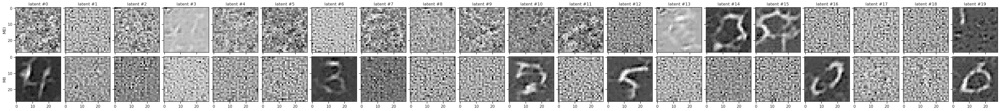